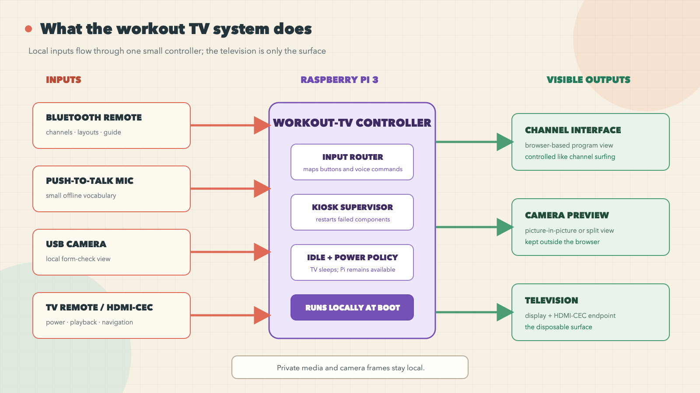
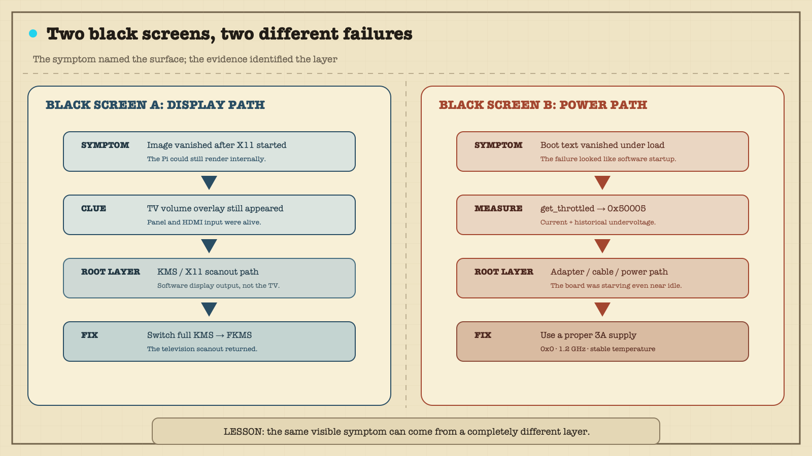
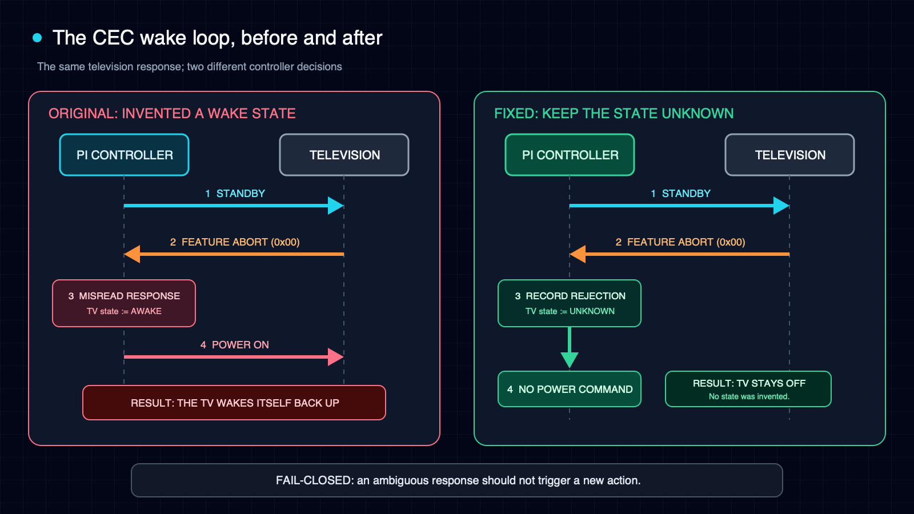

After midnight, the television in my garage turned itself on.
Nobody was exercising. Nobody had touched the remote. The Raspberry Pi connected to the screen was supposed to put the television into standby after a period of inactivity. Instead, the television and the Pi were both awake, lighting an empty garage.
The logs eventually showed that the system had obeyed its own code perfectly. The problem was that the code had misunderstood the television.
That was the latest surprise in a project that began with a much simpler thought: "I found a very, very old Raspberry Pi."
It was a Raspberry Pi 3, the sort of board that spends years in a drawer because it is too useful to throw away and never quite useful enough to retrieve. I also had a television near my exercise equipment. I wanted a workout screen that felt more like channel surfing than app browsing. Turn it on, find something watchable, start moving. No hunting through menus while pretending that menu navigation counts as a warm-up.
The plan grew quickly. My own channel-surfing web app would occupy most of the screen. A USB camera could act as a mirror for checking form. A small Bluetooth remote would change channels and layouts. Offline speech recognition would handle a few fixed commands. HDMI-CEC would let the television and Pi coordinate power. The Pi would boot directly into the experience instead of a desktop.

A fast build meets real hardware
The first working version came together in a burst. A lightweight Python controller launched the browser and camera preview, accepted commands from the remote, and restarted failed pieces. The camera stayed outside the browser so a crashed web page would not take the preview down with it. Voice recognition used a small offline vocabulary. A service manager started the whole thing at boot.
On my Mac, the tests passed. On the Pi, the pieces started. Then I carried everything to the garage and connected the television, camera, microphone, and remote.
The screen went black.
This was not even the project's only black screen, which is an important distinction. Earlier, the Pi could render a graphical session internally while the television showed nothing after X11 started. The television's own volume overlay still appeared, proving that the panel and HDMI input were alive. That failure came from the display stack on this particular 32-bit Raspberry Pi OS setup. Switching from the full KMS driver to the older FKMS path restored the scanout.
I had already fixed one legitimate software black screen. That success made the next black screen more dangerous: it trained me to look for another software explanation.
Twenty rounds in the wrong layer
The second failure happened during the physical deployment. Boot text appeared, scrolled for a while, and vanished. Sometimes the television still responded to its own controls. The Pi remained reachable. The kiosk did not appear.
Remote hardware debugging with an AI agent is an odd partnership. The agent can inspect code, compare configuration, read logs, and propose experiments. It cannot see the television. It cannot move a cable. If I report only "still black," it has little choice but to speculate.
So I became the probe.
We unplugged the camera and microphone. We stopped the graphical session. We switched to a text console. We checked whether the television could still draw its own overlay. We considered display permissions, the operating-system image, and the point where the graphical stack started. I swapped in an Apple phone charger rated at 5.2 volts and 2.4 amps. Nothing changed.
The investigation kept returning to software because that was where the symptom appeared. A black screen looks like a display bug. A failure near session startup looks like a service or permissions bug. Each theory was plausible enough to spend another round testing.
Then I asked a more physical question: what is the last boot message I can still see, and what power-hungry component starts near that moment?
The last visible line was close to the start of a session scope. That was not a proof, but it changed the experiment. The boot text had become a crude oscilloscope. Instead of asking which program had failed, I asked what changed electrically at that point in the boot.
With the camera disconnected, X stopped, and the machine almost idle, I ran the Raspberry Pi's throttling check:
vcgencmd get_throttled
throttled=0x50005The value recorded current and historical undervoltage and throttling. The Pi was starving for power even after I had removed the obvious load. The kiosk software was not the culprit. The fault was somewhere in the power path: adapter, cable, connection, or some combination of them.
The phone charger had been a bad control. A label that says 5.2 volts and 2.4 amps does not guarantee that the Pi will receive clean power after cable loss and transient load. I replaced the power path with a proper 3-amp supply.
The register stayed at 0x0. The processor held 1.2 GHz. Temperature remained stable. The black screen disappeared.

I had spent roughly twenty rounds investigating the layer where the symptom appeared. One command exposed the lower layer that made all of those symptoms possible.
There is a temptation to make this sound like an elegant diagnosis. It was not. It was an expensive reminder that plausible software theories multiply much faster than physical evidence. On a Raspberry Pi, power deserves an early check, not a ceremonial check after every clever idea has failed.
The television refuses to sleep
Once the power problem was gone, the little system became useful. The television remote could control the Pi through HDMI-CEC. The Bluetooth remote could switch channels and open a compact program guide. The camera could appear as a picture-in-picture view or occupy its own side of the screen. After 90 minutes without real input, the controller would pause playback and ask the television to enter standby while leaving the Pi available for maintenance.
Then the television started waking up by itself.
The first suspicion in a home automation system is usually that something issued a command at the wrong time. Perhaps an idle timer fired twice. Perhaps the television announced a state change. Perhaps another device claimed the active HDMI source. The logs showed a simpler loop.
The controller sent a CEC standby request. The television rejected it with a Feature Abort response. My code watched for messages that suggested the television had awakened, but its filter was too broad. It treated almost any non-standby response from the television as evidence that the television was back.
That state transition triggered a power-on command.
In plain English, the television said, "I rejected that command," and the Pi heard, "I am awake; please turn me on."
The bug looked ridiculous once written as a conversation. In code, it had looked reasonable: observe traffic from the television, infer that the television is active, restore the media session. The missing idea was uncertainty. Feature Abort did not mean "awake." It did not mean "asleep," either. It meant the command failed.
The fix was to do less. The controller stopped treating Feature Abort as a wake signal. If the television refused standby, the Pi would record that fact and wait rather than "helpfully" turning the screen back on. The real frame captured during the incident became a regression test.

Feature Abort and sent power on. The fixed controller preserves uncertainty and sends nothing.This is the part I want to remember: device-control code should fail closed when the message is ambiguous. Convenience code often assumes action is better than inaction. At midnight, in a dark garage, inaction is the feature.
The corrected file was deployed to the Pi on July 16. The deployed file matched the tested local file by SHA-256. In an isolated environment, 164 tests and 84 subtests passed. No recurrence or relevant warning had appeared in the checked logs at the time of writing. That is early operational evidence, not a claim of long-term stability.
What the system became
The finished setup is deliberately unglamorous. The Pi boots into a channel-surfing interface. The camera gives me a live form check without sending video through the browser or across the network. The Bluetooth remote handles the common actions. HDMI-CEC lets the television's own remote control layouts and playback. A few push-to-talk commands run locally with a fixed vocabulary. If a browser or camera process dies, the controller brings it back.
The television sleeps after inactivity, but the Pi stays online. That choice matters more than it sounds. An earlier version shut the Pi down completely, which saved a little power and made the next workout require a physical restart. The newer behavior treats the television as the disposable surface and the Pi as the quiet appliance behind it.
The project also taught me where not to optimize. At one point I compared two web shells and chased browser performance on old hardware. Some of that work led to a separate open-source story. None of it would have mattered while the board was underpowered. Measurement has an order. First make the platform healthy. Then decide whether the application is slow.
AI could not see the screen
Most accounts of AI-assisted coding focus on generated code. That was not the interesting part here. The hard moments involved missing state.
The agent could read every log line and still not know that the television's volume overlay was visible over a black HDMI image. It could propose ten experiments and still not know whether I had changed one variable or three. It could parse a CEC frame but could not stand in the garage at midnight and notice that the television had turned itself back on.
For this kind of work, the human does more than approve code. The human is part of the instrumentation.
That requires discipline on both sides. The agent needs to ask for observations that distinguish theories rather than a long list of generic checks. The human needs to report what changed, what stayed the same, and what can be ruled out. "The volume overlay appears, but the Pi image does not" is evidence. "Still broken" is barely a status update.
The collaboration improved when we treated each physical action as an experiment:
- Change one thing.
- Predict what each theory says should happen.
- Observe the result before changing anything else.
That sounds obvious. It is surprisingly easy to abandon when a screen is black and a dozen fixes are one command away.
Four notes for my next old Pi
Check power early. vcgencmd get_throttled now belongs near the beginning of my Raspberry Pi checklist. A healthy-looking adapter label is not a measurement at the board.
Name similar failures separately. This project had a display-stack black screen and a power-path black screen. Calling both "the black screen bug" would have erased the very evidence needed to solve them.
Use the human as a structured probe. Remote AI assistance becomes much more useful when sight, sound, cable changes, overlays, and boot timing are reported as controlled observations.
Treat ambiguous control messages as unsafe. A device saying "I could not do that" is not permission to infer a new state. When an automated action can wake hardware, unlock something, spend money, or send a message, uncertainty should usually lead to no action.
Old hardware, quieter software
The Raspberry Pi is still old. The television is still just a television. The project did not make either one more powerful.
What changed was the amount of friction between deciding to exercise and having something useful on the screen. The setup now wakes when I need it, shows a program and a camera view, accepts a few simple controls, and goes quiet when I leave.
Most of the work was not the feature list. It was learning why the screen was black, why the board was throttling, and why a television that rejected standby ended up receiving a power-on command.
The final system feels simple because the failures are no longer visible. That is probably the best outcome for a computer in a garage. It should not be impressive. It should be ready.